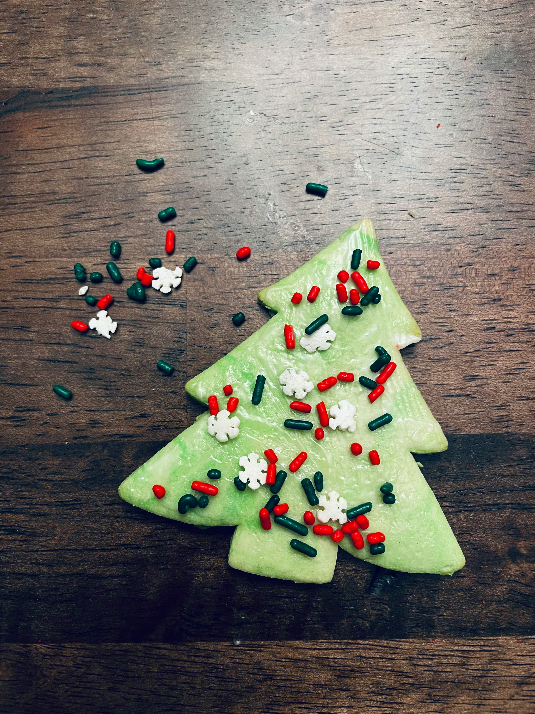

<!DOCTYPE html>
<html>
  <head>
    <meta charset="utf-8" />
    <meta http-equiv="X-UA-Compatible" content="IE=edge" />
    <title>Mama Gianna's Holiday Cookies</title>
    <meta name="viewport" content="width=device-width, initial-scale=1" />
    <link rel="icon" href="photos/deer-face-6580415_640.png" />
    <link rel="stylesheet" href="styles.css" />
  </head>
</html>
<body>
  <header>
    <h1>Mama Gianna's Holiday Treats</h1>
    <nav>
      <a id="home" href="index.html">Home</a>
      <a id="pistachio" href="pistachio.html">Pistachio Bark Cookies</a>
      <a id="crack" href="crack.html">Christmas Crack</a>
      <a id="melt" href="melting.html">Melting Moments</a>
    </nav>
  </header>
  <aside id="countdown-clock">
    
    <section id="countdown-main">
      <h2 id="countdown-header">Countdown to Christmas</h2>
      <section id="countdown-numbers">
        <div class="ticker">
          <h3 id="numberDays"></h3>
          <p>Days</p>
        </div>
        <div class="ticker">
          <h3 id="numberHours"></h3>
          <p>Hours</p>
        </div>
        <div class="ticker">
          <h3 id="numberMinutes"></h3>
          <p>Minutes</p>
        </div>
        <div class="ticker">
          <h3 id="numberSeconds"></h3>
          <p>Seconds</p>
        </div>
      </section>
    </section>
    
  </aside>
  <main class="recipe">
    
    <section class="instructions">
      <h2 class="recipe-name">Melting Moments</h2>
      <p>Makes approx. 3 dozen cookies</p>
      <p>
        I love anything almond flavoured, and these cookies are exactly that.
        This cookie will melt in your mouth and will quickly become your
        family's new favourite around the holiday!
      </p>
      <section>
        <h3>Ingredients</h3>
        <ul>
          <li>3/4 cup butter</li>
          <li>1 tsp vanilla extract</li>
          <li>1 tsp almond flavouring</li>
          <li>5 tbsp brown sugar</li>
          <li>1 1/2 cups flour</li>
          <li>2 tsp ice cold water</li>
          <li>1 cup finely chopped pecans - measure before chopping</li>
          <li>1/2 cup icing sugar</li>
        </ul>
      </section>
      <section>
        <h3>Instructions</h3>
        <ol>
          <li>Measure flour without sifting - it should be skimpy!</li>
          <li>
            Cream butter well in a mixer. Add vanilla and almond and beat well.
          </li>
          <li>
            Add brown sugar and ice water and beat until smooth - rub the
            mixture between your fingers to check and make sure it's all smooth!
          </li>
          <li>
            Add flour and chopped pecans, alternating, very gradually into
            mixture.
          </li>
          <li>
            Cover dough with plastic wrap and chill in refrigerator for 1 hour.
          </li>
          <li>
            Preheat oven to 275&deg;. Scoop into 1" balls and roll balls smooth
            with your hands and place balls 2" apart on an ungreased baking
            sheet.
          </li>
          <li>Bake for 40 minutes.</li>
          <li>
            While still warm from the oven, coat with icing sugar. You can toss
            them in a bowl, or shake them in a paper bag to coat!
          </li>
          <li>Let cool and enjoy!</li>
        </ol>
      </section>
    </section>
  </main>
  <footer>
    <p>
      Questions? Send us an email at
      <a href="mailto:mamagianna@holidaytreats.ca" id="email"
        >mamagianna@holidaytreats.ca</a
      >
    </p>
  </footer>
  <script src="index.js" async defer></script>
</body>
